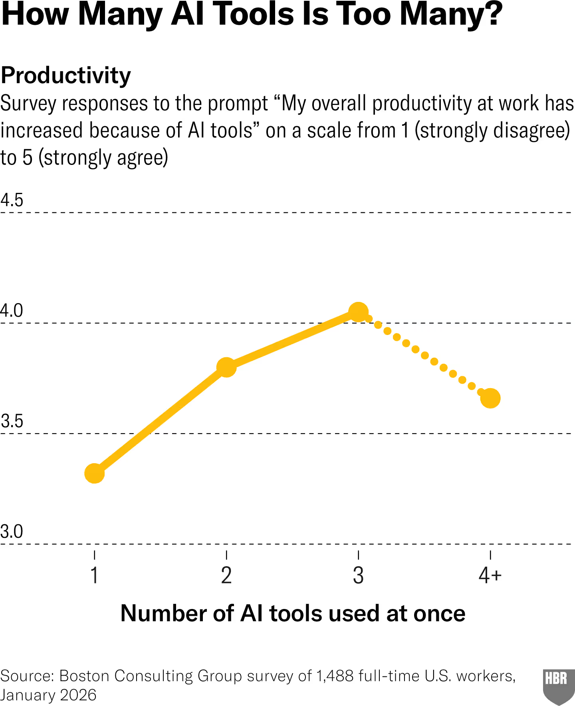
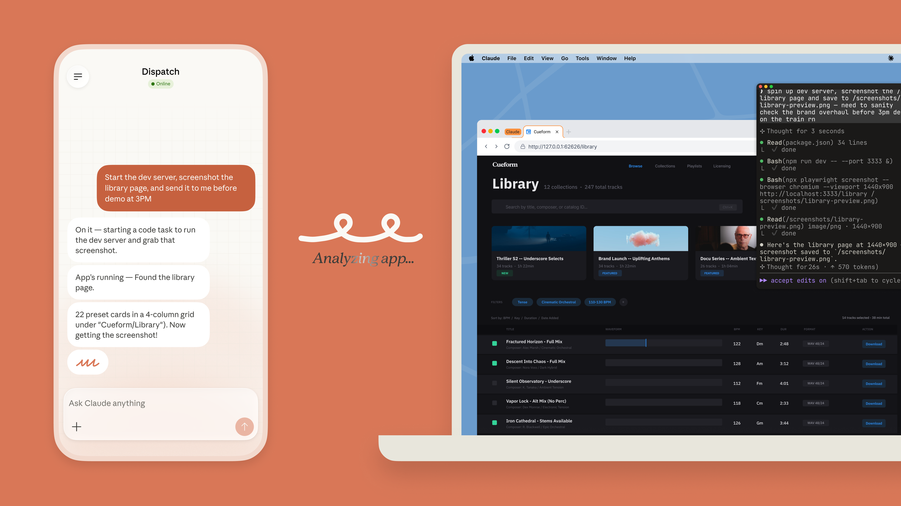
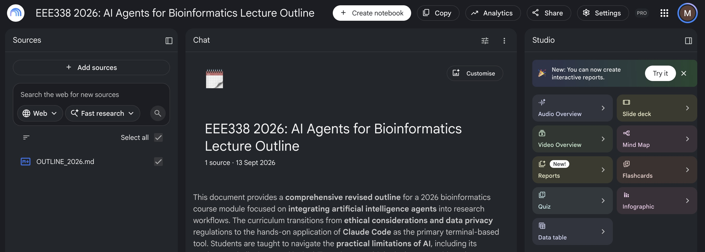

EEE338 — Next Generation Sequencing for Evolutionary Functional Genomics
University of Zurich / FGCZ · Masaomi Hatakeyama
17 September 2026 · one hour
github.com/masaomi/EEE338_2026
| Session | Block |
|---|---|
| Today 17 Sep · 1 h · slides 2–23 |
0. Set up — install, your key, first screen. We do this first. 1. The rules that bind you — ethics, data classes, three cautions 2. The tools — what an LLM is, what an agent is, and which one for which job |
| 18 Sep slides 24–31 |
3. Claude Code in practice — the two files that decide what it knows 4. How it fails on our data — the five failures, and which practical each one lives in (you run them; they are exercises, not slides) 5. What you are graded on Then at the keyboard: the page EEE338_2026_Claude_Code_part2,
and then Command Practice |
From 18 September the slides continue in a second
deck, EEE338_2026_AI_Agents_part2. The numbering runs straight on. | |
It is a very fast typist,
not a biologist,
and it has never seen your experiment.
SLIDES 4 – 7 · DO THIS FIRST · 17 SEPTEMBER
Getting to fgcz-kl-004 — two hops from your own machine, because it only exists inside the FGCZ subnetwork:
username is the same as your B-Fabric account.
Now install it, on fgcz-kl-004:
claude.ai/install.sh · code.claude.com/docs · fgcz-bfabric.uzh.ch
You are given a number, and XX below stands for it.
The table of numbers is in section 4 of the practical page — find
yourself there, and type your own two digits in.
source it once per login. Deliberately not in .bashrc —
you should notice that you are handling a credential.ai_log.md, or anything you hand in.
If it leaks: tell the lecturer, and it is revoked.All ten keys are revoked when the course ends.
Do not type your_name
— type your own name.
Asked once; the answer is remembered.
If you said No by mistake: quit, and run claude again.
Captured on fgcz-kl-004, 9 Sep 2026, Claude Code v2.1.266
| Line | Check this before you type anything |
|---|---|
Sonnet 5 … medium |
the model, and how hard it thinks. Set once with /model and /effort |
API Usage Billing |
your key was found. Anything else here means source did not work |
| the path | your own directory. The agent sees where you started it, and nothing above |
SLIDES 8 – 15 · 17 SEPTEMBER
Nature's reason for rule 1 is worth remembering, because it is not about quality:
Nature, Science, Cell, PLOS, Elsevier and the ICMJE all say versions of the same three rules.
nature.com/nature-portfolio/editorial-policies/ai · icmje.org/recommendations · publicationethics.org (COPE position statement)
UZH, Recommendations on the use of generative AI at UZH, principle 5:
The university sets the principle; each faculty sets the binding specifics for its own exams and theses. Check your own programme's rules before your thesis — they are stricter than this course.
It is one page, and it is the page you will be held to. Read it once, today.
UZH, Recommendations on the use of generative AI at UZH, uzh.ch/en/explore/basics/ai/recommendations.html · quoted verbatim, retrieved 13 Sep 2026 · the sanctions behind it: UZH Disziplinarverordnung and Integritätsverordnung
| Tool UZH provides | Approved for | Where it runs |
|---|---|---|
| LM Studio + Mistral | all levels | on your own device |
| M365 Copilot (Premium) | public, internal, confidential | Cloud EU |
| DeepL Pro Advanced | all levels | Cloud EU |
| GitHub Copilot | public, internal | worldwide |
| Claude / Claude Code
still under evaluation |
public data only | — |
UZH Central IT, “AI Tools and Services”, zi.uzh.ch/en/staff/software-elearning/AI-Tools-and-Services-.html · retrieved 9 Sep 2026
| Class | Example | May it go to an external model? |
|---|---|---|
| Public | published sequence in DDBJ / ENA / SRA; a released genome | Yes. This course. |
| Internal | unpublished lab data, a manuscript in preparation | Only under an institutional contract; ask the lecturer or your PI |
| Confidential | data under an MTA or a collaboration agreement | No — you would be breaking a contract |
| Sensitive | human / patient genomes, clinical records | No. Legally regulated. Different rules entirely |
Structure follows the UZH information classification directive (Weisung zur Klassifizierung von Informationen, rud.uzh.ch, in German) and the UZH AI Guidelines, informationsecurity.uzh.ch/en/regulations/information-security-guidelines.html
Fluent, confident, and wrong. In this course it will invent:
/scratch/EEE338_2026/data/genome.fa
--strandness reverse
AT2G19100
Transcript captured on fgcz-kl-004, 9 Sep 2026, claude-sonnet-5. Guessing beats abstaining across the board: of the 36 models in the AA-Omniscience benchmark, the most reticent still attempted 42 % of questions and every other model attempted at least 65 % — Artificial Analysis, arXiv:2511.13029 · leaderboard: artificialanalysis.ai/evaluations/omniscience
Workslop: output that has the shape of finished work and none of the substance. Well formatted, correct-sounding, empty.
Niederhoffer, Rosen Kellerman, Lee, Liebscher, Rapuano & Hancock, “AI-Generated ‘Workslop’ Is Destroying Productivity”, Harvard Business Review, 22 Sep 2025 · figures from their survey of US desk workers, run by BetterUp Labs with the Stanford Social Media Lab · hbr.org/2025/09/ai-generated-workslop-is-destroying-productivity

1,488 full-time workers, asked how many AI tools they run at once, and whether AI has made them more productive.
agreement with “my productivity has increased because of AI”, scale 1–5
Chart and data: Bedard, Kropp, Hsu (BCG), Karaman, Hawes (UC Riverside), Kellerman (BCG), “When Using AI Leads to ‘Brain Fry’”, Harvard Business Review, 5 Mar 2026, hbr.org/2026/03/when-using-ai-leads-to-brain-fry · BCG survey of 1,488 full-time U.S. workers, Jan 2026 · image via techflowpost.com/en-US/article/30925 (31 Mar 2026)
Keep ai_log.md in your working directory. Four lines per task:
That you say you used it, and what you checked. Slide 8 (journals) and slide 9 (UZH) both demand it.
How you use AI is not assessed and not examined. There is no mark for using it a lot, or for using it well.
keep ai_log.md up to date: after each task, append asked / got / checked / fixedchecked line yourself — it cannot know what you checked.SLIDES 16 – 23 · 17 SEPTEMBER
A neural network: a very large function. Numbers go in on the left, numbers come out on the right, and every line in between carries one number of its own.
this is the shape of every current model · the particular shape is on the next slide
All of them use the same shape of network, invented in 2017 and called a transformer. It is the same small block, stacked dozens of times.
Vaswani et al., “Attention Is All You Need”, NeurIPS 2017 — peer-reviewed proceedings, not a preprint; in machine learning the conference is the venue of record · among the ten most-cited papers of this century (Nature, counted across five databases, Apr 2025) · attention itself is older — Bahdanau, Cho & Bengio 2014; what this paper removed was the recurrence, which is what the title is claiming
Text in, text out. It cannot open a file, run a command, or find out whether it was right.
ChatGPT in a browser, mostly this.
A program around the model that lets it run commands, read the output, edit files, and try again.
Claude Code, Codex, Copilot CLI, Gemini CLI.
| Tool | From | Note |
|---|---|---|
| Claude Code | Anthropic | the tool for this course |
| Codex CLI | OpenAI | same idea, different model |
| Copilot CLI | GitHub | tied to a GitHub account |
| Gemini CLI | same idea again | |
| opencode | Anomaly | open source (MIT). Not tied to one company's model — it drives any of them, including one running on your own machine |
They are more alike than the marketing suggests. What you learn here transfers. The 2025 version of this slide is already wrong about every model name — that is the speed of this field, and a reason to learn the shape rather than the product.
How fast: Google's desktop app reached Windows on 10 September 2026. That is one week before this lecture.
claude.ai/code · developers.openai.com/codex/cli · github.com/github/copilot-cli · geminicli.com · opencode.ai, github.com/anomalyco/opencode (MIT) · retrieved 17 Sep 2026
module load, run STAR, read the log, see the error,
and fix its own command.| App | Runs on | Note |
|---|---|---|
| Claude Desktop Anthropic | macOS, Windows | can be pointed at local files (MCP) |
| ChatGPT OpenAI | macOS, Windows | voice, canvas |
| Gemini Google | macOS (Apr 2026) · Windows (10 Sep 2026) | Google Workspace |
| Copilot Microsoft | built into Windows and Office | UZH-provided — slide 10 |
| LM Studio + a local model | your own machine, offline | UZH: approved for all data classes |
| Ollama + a local model | your own machine, offline | not on the UZH list — see below |
Ollama does the same job — a model on your own machine, nothing leaving it — and it is what a CLI agent talks to when you point one at a local model. It is not on the UZH list. “Approved for all data classes” is about LM Studio, not about local models in general: UZH Central IT's own write-up on running them says Ollama and Open WebUI are not centrally supported by UZH IT, and warns not to leave its REST API open to others. Fine to explore; for anything above public, use the approved one.

claude.ai/download · openai.com/chatgpt/download · gemini.google · microsoft.com/copilot · lmstudio.ai · ollama.com · surveyed 9 Sep 2026 · UZH status from zi.uzh.ch “AI Tools and Services” and “AI on Your Laptop” (22 Jan 2025), both retrieved 17 Sep 2026
| Tool | Grounded on | Good for |
|---|---|---|
| NotebookLM Google | documents you upload | twenty papers before writing an introduction |
| Perplexity | the live web, with citations | “what is current?” |
| Consensus | published papers | a quick, evidence-backed answer |
| Elicit | published papers | screening for a systematic review |
| Scite | citation context | does later work support or contradict this? |
| SciSpace | one PDF | explaining a hard paper while you read it |

notebooklm.google · perplexity.ai · consensus.app · elicit.com · scite.ai · scispace.com · surveyed 9 Sep 2026
Nothing from this hour is wasted there. The habit of asking for a number and checking where it came from is exactly what a written exam asks you to do on your own.
ai_log.md all term: not whether, but what for, and what you
checked yourself.26HS EEE338 schedule V1 · exam 6 Oct 13:00–17:00, 13J96 · student presentations 7 Oct, all day